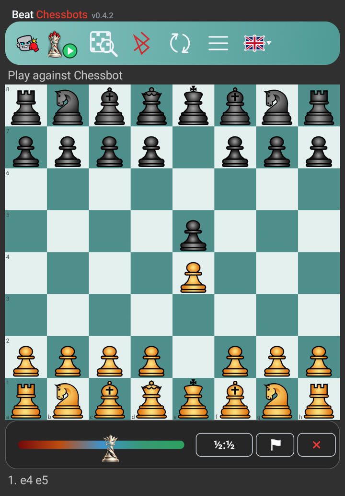
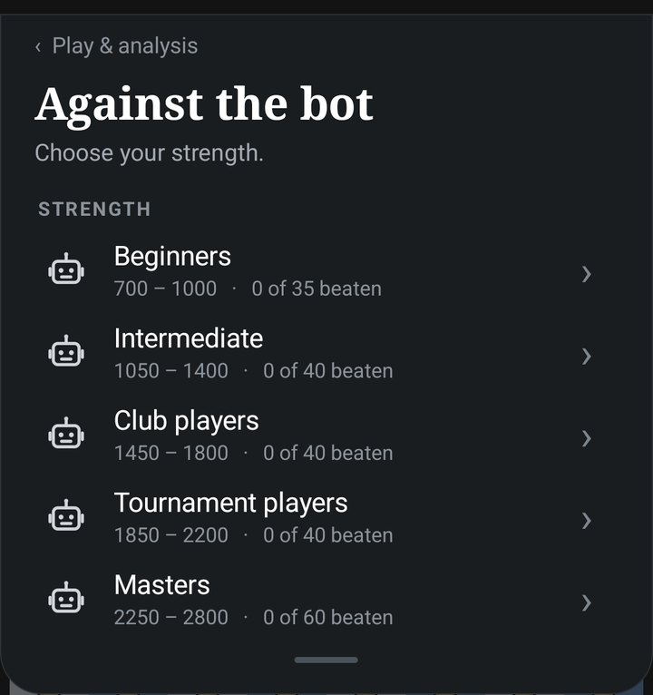
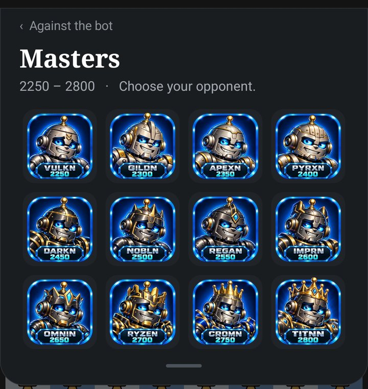
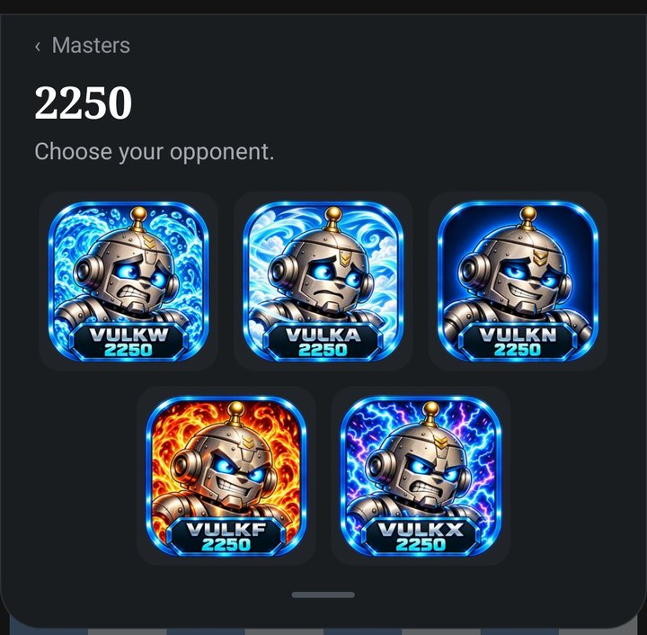
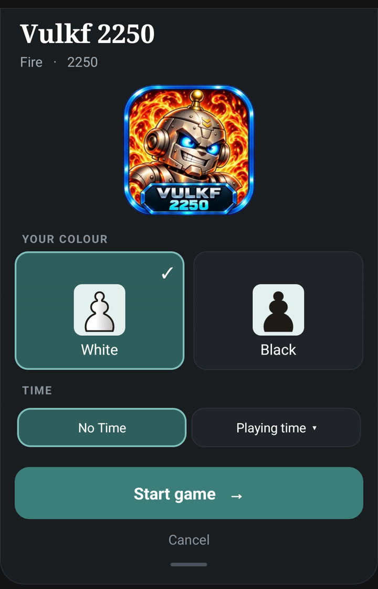
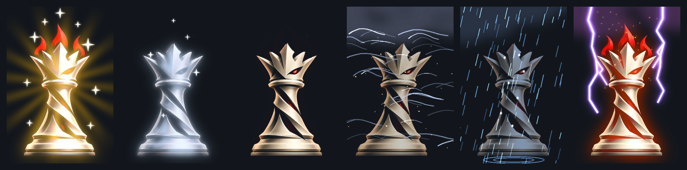
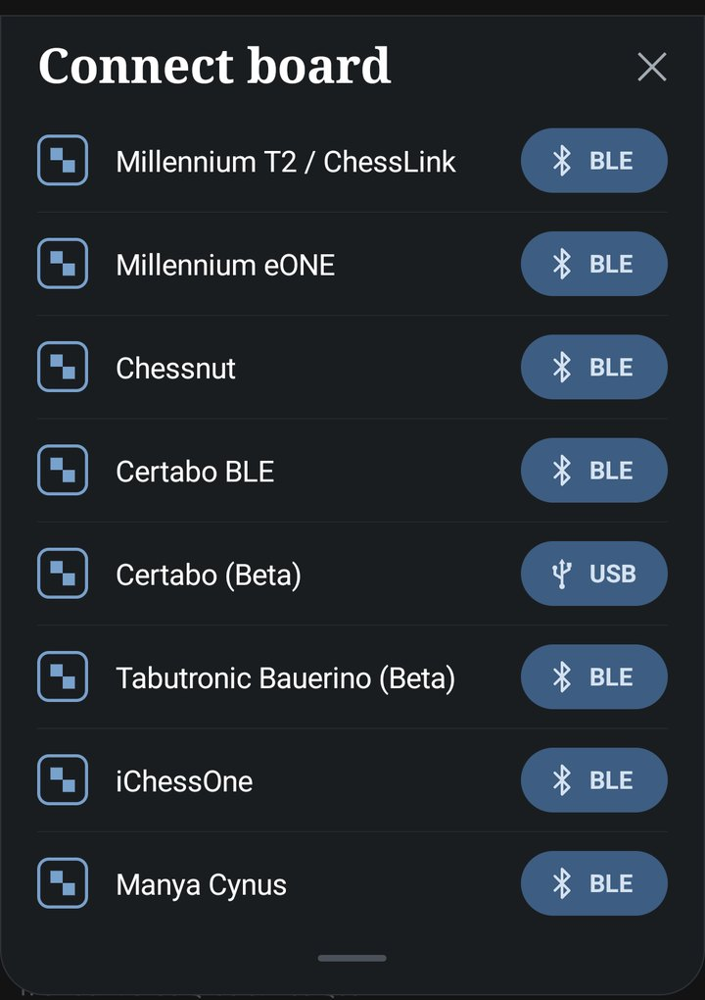
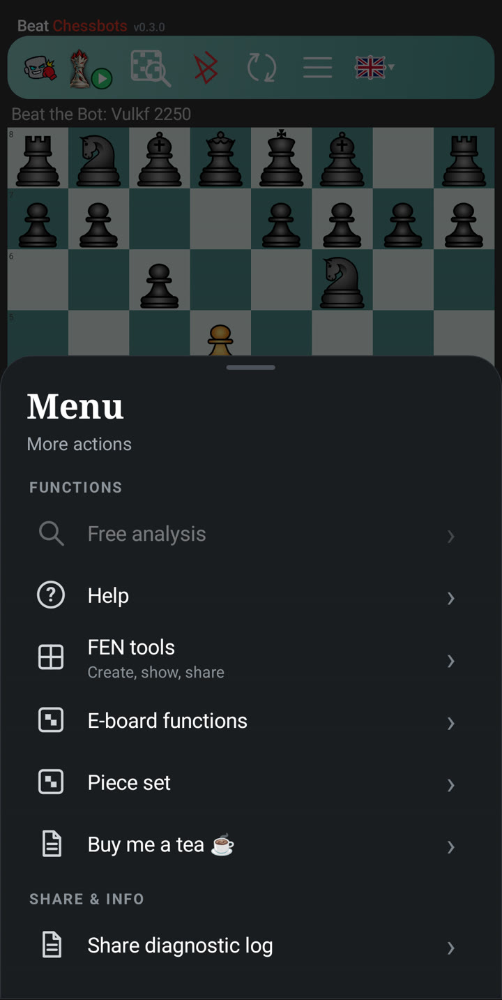

Manual
Beat Chessbots
Beat Chessbots is a chess app for Android. You play against 215 bots, each with a face, a name and a style, or against Chessbot, who adapts to your strength. You can play on the screen or on a real e-board. Everything runs on your phone: no account, no ads, no internet needed to play.
Project page: https://parlue.github.io/beatchessbots/ · Questions, bugs, wishes: Discord server electricchess · https://discord.gg/AdZukFtBf
1. The screen

The row at the top, from the left:
| Symbol | Meaning |
|---|---|
| Boxing glove | Beat the Bot: play against the 215 bots |
| Queen with play button | Play against Chessbot (Adaptive or Elo) |
| Magnifier | Analysis |
| Bluetooth | Connect an e-board |
| Arrows | Flip the board |
| Three lines | Menu |
| Flag | Language |
Below the board you see the queen on a colour strip, and on the right the three game symbols (see The game). Under that the moves of the game are listed.
2. Beat the Bot
Tap the boxing glove. There are 215 bots in five strength groups:
| Group | Strength | Bots |
|---|---|---|
| Beginners | 700 – 1000 | 35 |
| Intermediate | 1050 – 1400 | 40 |
| Club players | 1450 – 1800 | 40 |
| Tournament players | 1850 – 2200 | 40 |
| Masters | 2250 – 2800 | 60 |

Choose a group and tap a face. Every face is one strength level.

Every strength comes with five opponents of different style: Fortress, Stone, Normal, Fire and Thunder. The number is a guide to the playing strength; the style decides how the bot plays, from cautious to aggressive.

After you have chosen a style, the start window opens. Choose White or Black and the time, then tap Start game.

The green check. A green check on a face means that you have beaten this opponent with White and with Black (checkmate). With only one colour, the face shows a hollow check with a white or black dot; in the start window the missing colour is already selected. A draw, a resignation or an abort does not count.
No hints. Against the bots there are no hints and no move suggestions. You can take a move back (arrow next to the game symbols) and you can use the analysis, but a game in which you used one of them does not count for the green check.
3. Play against Chessbot
Tap the queen with the play button. In the start window you choose the type of game:
- Adaptive. Chessbot adapts to you and plays close to equality. If the position is about equal, he plays the move that comes closest to equality. If you are clearly worse, he helps with a weaker but sensible move. If you are clearly better, he keeps you about there, and you have to convert the advantage yourself. In a hopeless position, or when a mate is near, he plays at full strength. The aim is to lead you into an endgame that you can win with technique. There is no clock and no taking back in this type of game.
- Elo. Chessbot always plays at the fixed level that you set. Here you can use the clock and take moves back.
With a connected board the start window also offers Help: lift one of your pieces and hold it in the air for about two and a half seconds, and the board shows the best move of that piece.
4. The game
Below the board the queen shows how the game stands. The strip runs from red on the left (the opponent is ahead) through blue in the middle (balanced) to green on the right (you are ahead). The queen has six moods, from radiant to storm and lightning.

On boards with colour LEDs (iChessOne, Spectrum) the move of the opponent lights up in the colour of the mood.
On the right of the bar below the board there are three symbols:
| Symbol | Function |
|---|---|
| ½:½ | Draw. You offer a draw on your turn. The opponent accepts if the position is about balanced (not more than about one pawn of advantage for either side) and no mate is in sight. |
| White flag | Resign. After a confirmation the game is lost. |
| Red X | Abort. The game ends at once; afterwards you can save it. |
When the game ends by itself (mate, stalemate, insufficient material, threefold repetition, 50-move rule, time) a card appears below the board with four choices: Open in PGN analysis, Share game, New game and Close.
5. The clock
In the start window you choose one of three settings:
- No Time
- Playing time: 5+2, 10+5, 15+5, 30+10, 60+30, or the tournament time 40/90+30
- Time to move: 1, 2, 5, 10, 30 or 60 seconds per move (Elo game only)
The clocks sit next to the board: the opponent on top, you below. Against Chessbot there are clocks only in the Elo game, not in the adaptive game.
6. Connect an e-board
Tap the Bluetooth symbol. You can connect:

- Millennium T2 / ChessLink
- Millennium eONE
- Chessnut
- Certabo (Bluetooth)
- Certabo (USB)
- Tabutronic Bauerino
- iChessOne
- Manya Cynus
You make your moves on the real pieces; the move of the opponent is shown on the screen and by the LEDs of the board. On boards with sensors the LEDs show during the set-up which squares are still wrong. Certabo and Spectrum also work over a USB cable on the phone (with a USB OTG adapter).
Boards without piece recognition (Millennium eONE, Tabutronic Sentio, Tabutronic Bauerino) only report which squares are occupied. The app knows the pieces from the game and reads your move from that.
If you take a move back on a board, first put back the move of the bot: the app recognises it, and the LEDs then show which of your moves you have to put back.
Beat Chessbots is an independent app. It is not affiliated with, endorsed by or sponsored by the makers of the supported boards. All product names are trademarks of their respective owners.
7. The menu

- Free analysis (with a connected board): the screen always shows the position on the board, and Stockfish analyses it live.
- Help: the quick guide inside the app.
- FEN tools: create, show and share a FEN.
- E-board functions: download the games stored on your board (Chessnut, Supreme T2, eChessGW), the player side on the Chessnut Move, the LED colour for Spectrum and iChessOne, and "White at the bottom" for the Bauerino. An entry is grey while the board it belongs to is not connected.
- Piece set: Standard, Merida, MPChess or Bryan's Italian.
- Buy me a tea: a voluntary tip for the development. Nothing is unlocked by it.
- Share diagnostic log: for troubleshooting; you send the file by mail, messenger or Discord.
8. Analysis
Tap the magnifier. Stockfish calculates live and shows up to five lines, with the evaluation in bold at the front. Arrows on the board show the moves: dark green is the best move, light green are other good moves, red is a losing move.
In a Beat the Bot game, a win after using the analysis no longer counts for the green check.
9. Games and data
- All finished games are saved as PGN files in the folder Downloads/eChessboards. Share them from the card at the end of the game, or open them in any PGN program.
- The engines run on your device. The bots are played by the open-source engine Virgin (MIT licence); the analysis uses Stockfish (GPLv3).
- Languages: German and English, plus Spanish, Italian, French and Polish for the buttons and messages. The quick guide in the app exists in German and English.
- Privacy policy: https://parlue.github.io/beatchessbots-privacy/